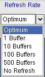

 |
REFRESH RATE SELECTOR |
Allows changing the rate at which the spectrum windows and the status display are updated. Normally the "Optimum" setting (=100 buffers) is adequate for medium to high data rates. If the data rate is very low, the refresh rate can be increased. For high counting rates the refresh rate should be decreased or even set to "No Refresh" (in this case one has to click Display → Refresh All from time to time).